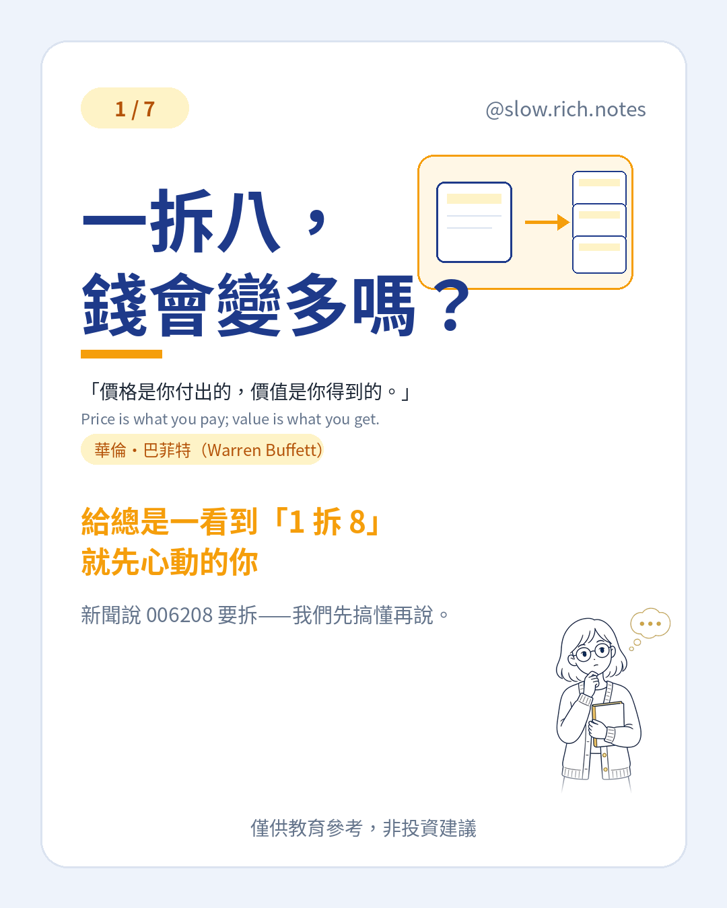

新聞一寫「1 拆 8」，很多人第一個反應是：單位變多了，是不是變有錢了？心動很正常，但先把「分割」講清楚，比較不會被標題帶走。
簡單講，分割就是把你手上的一單位，拆成好幾單位，單價也跟著變便宜。正式名稱叫受益憑證分割。看起來張數變多了，可是把「份數 × 單價」乘起來，口袋裡的總額通常差不多——先不計手續費和市場漲跌。
用一個假設例子：假設你持有 1 單位、價格 240 元。若以 8 倍分割（這只是假設），會變成大約 8 單位 × 約 30 元，總額仍約 240 元。分割不是白送你一筆錢，只是把同一塊餅切成比較小的塊。
富邦台50（006208）預計在 12/18 召開受益人會議表決要不要分割。大家常講的「1 拆 8」現在還只是市場預估；真正拆成幾份，要看會議通過當天的淨值（一單位值多少錢），大致會拆到接近發行價 30 元附近。公告裡也曾用區間舉例：淨值落在不同區間，預估倍數可能是 7、8 或 9 倍。倍數不是保證，以會議與相關公告為準。
也別跟另外兩件事搞混。除權息是公司發錢或配股；折溢價是市價跟淨值的差距。分割本身不會憑空創造報酬，漲跌還是看市場，成本也還在。
看懂這個詞，是為了少慌一下，不是為了追新聞或急著買賣。提到 006208 只是當新聞主題說明，不是推薦標的。
想從投資的第一步開始，可以免費領《投資新手入門清單》，對著清單慢慢勾。
⚠️ 僅供教育參考，非投資建議。文中若有數字，皆為假設例子，請依自己的狀況調整。投資有風險，請自行評估。